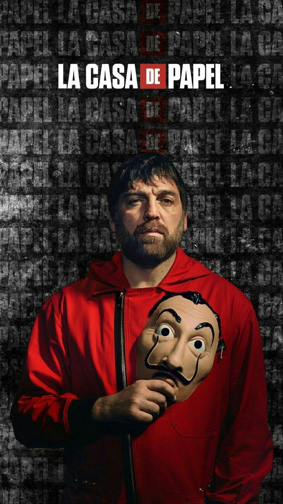

Bogotá - The Counterfeit Expert
Bogotá, portrayed by Hovik Keuchkerian, is a skilled counterfeiter in "Money Heist."
His character brings a unique set of skills to the Royal Mint heist, making him
an invaluable member of the gang. Bogotá's background and experiences add a layer
of complexity to the story as he navigates the challenges of the high-stakes heist
orchestrated by the Professor. Known for his wisdom and loyalty, Bogotá becomes an
integral part of the dynamics within the group. As the series unfolds, Bogotá's
character is central to themes of trust, camaraderie, and the pursuit of a common
goal against formidable odds.